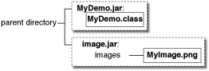
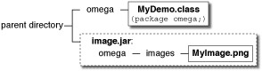
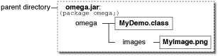
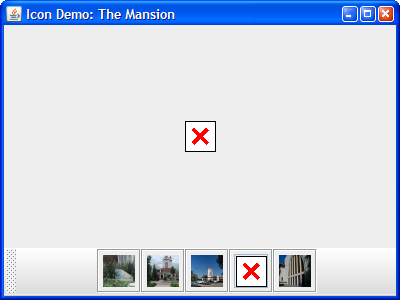

Lección: Usando Componentes Swing
Cómo Usar Iconos
Muchos componentes de Swing, tales como las etiquetas, los botones, y los paneles tabulados, pueden ser
decorados con un icono ─ una imagen de tamaño fijo. Un icono es un objeto que se
adhiere al interfaz
Icon. Swing
suministra una implementación particularmente útl del interfaz Icon:
ImageIcon, la
cual pinta un icono a partir de una imagen GIF, JPEG, o PNG.
Aquí tiene una captura de una aplicación con tres etiquetas, dos decoradas con un icono:

El programa usa un icono de imagen para contener y pintar los símbolos amarillos. Una sentencia crea el icono de imagen y dos sentencias más incluyen el icono de imagen en cada una de las dos etiquetas:
ImageIcon icon = createImageIcon("images/middle.gif",
"a pretty but meaningless splat");
label1 = new JLabel("Image and Text", icon, JLabel.CENTER);
...
label3 = new JLabel(icon);
El método createImageIcon (usado en el trozo precedente) es uno que usamos en muchos de nuestros
ejemplos de código. Encuentra el fichero especificado y devuelve un ImageIcon para ese fichero, o
null si el fichero no pudo ser encontrado. Aquí tiene una implementación típica:
/** Devuelve un ImageIcon, o null si la ruta no es válida. */
protected ImageIcon createImageIcon(String path,
String description) {
java.net.URL imgURL = getClass().getResource(path);
if (imgURL != null) {
return new ImageIcon(imgURL, description);
} else {
System.err.println("No se pudo encontrar el archivo: " + path);
return null;
}
}
En el trozo precedente, el primer argumento al constructor de ImageIcon es relativo a la ubicación
de la clase actual, y será resuelta como una URL absoluta. El argumento description es una cadena
que permite a las tecnologías de asistencia ayudar a un usuario con
discapacidad visual a entender que información transmite el icono.
Generalmente, las aplicaciones proporcionan sus propios conjuntos de imágenes usados como parte de la
aplicación, como es el caso con las imágenes usadas por muchas de nuestras demostraciones. Debería usar el
método getResource de Class para obtener la ruta a la imagen. Esto permite a la
aplicación verificar que la imagen está disponible y satisfacer un manejo de errores razonable si no lo está.
Cuando la imagen no es parte de la aplicación, getResource no debería ser usado y el constructor
ImageIcon es usado directamente. Por ejemplo:
ImageIcon icon = new ImageIcon("images/middle.gif",
"una pieza de madera delgada bonita pero sin sentido");
Cuando especifica un nombre de fichero o una URL a un constructor ImageIcon, el proceso se bloquea
hasta después de que los datos de la imagen se hayan cargado completamente o se haya probado que la ubicación
de los datos es errónea. Si la ubicación de los datos es inválida (pero no null), se crea todavía un
ImageIcon exitosamente; sólo que no tiene tamaño y, por lo tanto, no pinta nada. Como se muestra
en el método createImageIcon, es aconsejable verificar primero que la URL apunta a un archivo
existente antes de pasarlo al constructor de ImageIcon. Esto permite un manejo elegante de los
errores cuando el fichero no está presente. Si quiere más información mientras la imagen se está cargando,
puede registrar un observador sobre el icono de imagen llamando a su método setImageObserver.
Bajo el capó, cada icono de imágen usa un objeto
Image para contener
los datos de la imagen.
El resto de esta sección cubre los siguientes temas:
- Un Ejemplo de Imágen de Icono Más Complejo
- Cargar Imágenes Usando getResource
- Cargar Imágenes En Applets
- Mejorar el Rendimiento Percibido Cuando se Cargan Imágenes de Iconos
- Crear una Implementación de Icono Personalizado
- La IPA de Imágenes de Icono
- Ejemplos que Usan Iconos
Un Ejemplo de Imágen de Icono Más Complejo
Aquí tiene una aplicación que usa seis iconos de imagen. Cinco de ellos muestran imágenes en miniatura y el sexto muestra a tamaño completo la fotografía.
Pruebe esto:
-
Pulse el botón Lanzar para ejecutar IconDemo usando Java™ Web Start ( descargue KDJ 7 oposterior). O, para compilar y ejecutar usted mismo el ejemplo, consulte elíndice de ejemplos.

-
Pulse en cualquiera de la imágenes en miniatura para ver las fotografías en tamaño completo.
- Mantenga el ratón sobre una fotografía. Una tool tip aparece que muestra la leyenda de la fotografía.
IconDemoApp demuestra los iconos usados de las siguientes formas:
- Como un elemento del IGU adjunto a un botón (las imágenes en miniatura en los botones).
- Para mostrar una imagen (las cinco fotografías).
Las fotografía son cargadas en un hilo separado por loadimages.execute. El código de
loadimages se muestra un poco más tarde en esta sección.
La clase ThumbnailAction, una clase anidada en
IconDemoApp.java, es una descendiente de AbstractAction que gestiona nuestro
icono de imagen de tamaño completo, una versión en miniatura, y su descripción. Cuando el método
actionPerformed es llamado la imagen de tamaño completo es cargada dentro del área de
visualización principal. Cada botón tiene su propia instancia de ThumbnailAction la cual
especifica una imagen diferente para mostrar.
/**
* Action class que muestra la imagen especificad en su constructor.
*/
private class ThumbnailAction extends AbstractAction{
/**
*El icono si la imagen completa que queremos mostrar.
*/
private Icon displayPhoto;
/**
* @param Icon - La foto de tamaño completo para mostrar en el botón.
* @param Icon - La miniatura para mostrar en el botón.
* @param String - La descripción del icono.
*/
public ThumbnailAction(Icon photo, Icon thumb, String desc){
displayPhoto = photo;
// La pequeña descripción se convierte en el tooltip de un botón.
putValue(SHORT_DESCRIPTION, desc);
// LARGE_ICON_KEY es en realidad la clave para establecer el
// icono cuando una Action es aplicada al botón.
putValue(LARGE_ICON_KEY, thumb);
}
/**
* Muestra la imagen completa en el área principal y establece el título de la aplicación.
*/
public void actionPerformed(ActionEvent e) {
photographLabel.setIcon(displayPhoto);
setTitle("Demo Icon: " + getValue(SHORT_DESCRIPTION).toString());
}
}
Cargar Imágenes Usando getResource
Más a menudo, los datos de un icono de imagen vienen de un fichero de imagen. Hay un número de formas válidas en las que sus clases y ficheros de imagen de aplicación pueden ser configurados en su servidor de ficheros. Podría tener sus ficheros de clases en un fichero JAR, o sus ficheros de imagen en un fichero JAR; podrían estar en el mismo fichero JAR, o podrían estar en ficheros JAR diferentes. Las siguientes figuras ilustran un poco las formas en que estos ficheros pueden ser configurados:
| Un fichero de clase próximo a un directorio de imágenes que contiene el fichero de imagen, en formato PNG. |
Un fichero de clase en algún directorio como un fichero JAR. El fichero JAR fue creado con todas las
imágenes en un directorio images.
|
|  | |
| Fichero de clase en un fichero JAR y las imágenes en otro fichero JAR. | Clase y ficheros de imagen en el mismo fichero JAR. |
Si está escribiendo una aplicación del mundo real, es probable (y recomendado) que coloque sus archivos en un paquete. Para más información sobre los paquetes, vea Creando y Usando Paquetes en el recorrido Aprendiendo el Lenguaje Java. Aquí tiene algunas configuraciones posibles usando un paquete llamado "omega":
|  | |
Fichero de clase en un directorio llamado omega. Imagen en el directorio
omega/images.
|
Fichero de clase en el directorio omega. Imagen en un fichero JAR que no está dentro del
directorio omega, pero creado con la jerarquía omega/images.
|
|  | |
Un gran fichero JAR con los ficheros de clase bajo el directorio omega y los ficheros de
imagen bajo el directorio omega/images.
|
|
Las siete configuraciones mostradas son válidas, y el mismo código lee la imagen:
java.net.URL imageURL = myDemo.class.getResource("images/myImage.gif");
...
if (imageURL != null) {
ImageIcon icon = new ImageIcon(imageURL);
}
El método getResource causa que el cargador de clase busque a través de los directorios y los
ficheros JAR en la ruta de clases (class path) del programa, devolviendo una URL tan pronto como encuentra el
fichero deseado. En el ejemplo el programa MyDemo intenta cargar el fichero images/myImage.png
desde la clase omega. La clase cargadora busca a través de los directorios y los ficheros JAR en la
ruta de clases del programa /omega/images/myImage.png. Si el cargador de clases encuentra el
fichero, devuelve la URL del fichero JAR o directorio que contiene el fichero. Si otro fichero JAR o directorio
en la ruta de clases contiene el fichero images/myImage.png, el cargador de clase devuelve la
primera instancia que contiene el fichero.
Aquí hay tres formas de especificar la ruta de clases:
-
Usando el argumento de línea de comandos
-cpo-classpath. Por ejemplo, en el caso donde las imágenes están en el fichero JAR llamadoimages.jary el fichero de clase está en el directorio actual:java -cp .;images.jar MyDemo [Microsoft Windows] java -cp ".;images.jar" MyDemo [intérprete emulando un shell de UNIX en Microsoft Windows ─ debe entrecomillar la ruta] java -cp .:images.jar MyDemo [UNIX]Si su imagen y los ficheros de clase están en ficheros JAR separados, su línea de comando se parecerá a algo como esto:
java -cp .;MyDemo.jar;images.jar MyDemo [Microsoft Windows]En la situación donde todos los ficheros están en un solo fichero JAR, puede usar o el siguiente comando:
java -jar MyAppPlusImages.jar java -cp .;MyAppPlusImages.jar MyApp [Microsoft Windows]Para más información, vea el recorrido Ficheros JAR.
-
En el fichero JNLP del programa (usado por Java Web Start). Por ejemplo, aquí tiene el fichero JNLP usado por
DragPictureDemo:<?xml version="1.0" encoding="utf-8"?> <!-- Fichero JNLP para DragPictureDemo --> <jnlp spec="1.0+" codebase="https://docs.oracle.com/javase/tutorialJWS/src/uiswing/misc/examples" href="DragPictureDemo.jnlp"> <information> <title>DragPictureDemo</title> <vendor>The Java(tm) Tutorial: Sun Microsystems, Inc.</vendor> <homepage href="https://docs.oracle.com/javase/tutorial/uiswing/misc/examples/index.html#DragPictureDemo"/> <description>DragPictureDemo</description> <description kind="short">Una demo mostrando como instalar la transferencia de datos en un componente personalizado.</description> <offline-allowed/> </information> <resources> <j2se version="1.6+"/> <jar href="allClasses.jar"/> <jar href="images.jar"/> </resources> <application-desc main-class="DragPictureDemo"/> </jnlp>En este ejemplo, los ficheros de clase y los ficheros de imágenes están en ficheros JAR separados. Los ficheros JAR son especificados usando la etiqueta XML
jar. -
Estableciendo la variable de entorno
CLASSPATH. Este último enfoque no es recomendado. SiCLASSPATHno es establecido, el directorio actual (".") seguido por la ubicación de las clases del sistema provistas con el EEJ se utilizan por defecto.
La mayoría de los ejemplos del Tutorial de Swing coloca las imágenes en un directorio images
bajo el directorio que contiene los ficheros de clase de los ejemplos. Cuando crea ficheros JAR para los
ejemplos, mantenemos las mismas ubicaciones relativas, aunque a menudo colocamos los ficheros de clase en un
fichero JAR diferente al fichero JAR de imágenes. No importa dónde las clases y los ficheros de imágen estén
en el sistema de ficheros ─ en un fichero JAR, o en múltiples ficheros JAR, en un paquete
nombrado, o en el paquete por defecto ─ el mismo código encuentra los ficheros de imagen usando
getResource.
Para más información, vea Acceder a los Recursos de una Manera Independiente de la Ubicación y las Consideraciones de Desarrollo de Aplicaciones.
Cargar Imágenes En Applets
Los applets generalmente cargan los datos de imagen desde la computadora que sirvió el appleta. La etiqueta
APPLET es donde especifica la información sobre las imágnes usadas en el applet. Para más
información sobre la etiqueta APPLET vea
Desplegando con la Etiqueta Applet.
Mejorar el Rendimiento Percibido Cuando se Cargan Imágenes de Iconos
Ya que las imágenes fotográficas pueden ser de acceso lento,
IconDemoApp.java usa un SwingWorker para mejorar el rendimiento del programa
tal como lo percibe el usuario.
Carga de imágenes en segundo plano ─ el programa usa un objeto
javax.swing.SwingWorker
para cargar cada imagen fotográfica y calcula su miniatura en un hilo en segundo plano. Usar un
SwingWorker previene al programa de parecer congelarse mientras carga y escala las imágenes.
Aquí está el código que procesa cada imagen:
/**
* La clase SwingWorker que carga las imágenes en un hilo en segundo plano y llama a publish
* cuando una nueva está lista para ser visualizada.
*
* Usamos Void como el primer parámetro de SwingWorker porque no necesitamos devolver
* nada desde doInBackground().
*/
private SwingWorker<Void, ThumbnailAction> loadimages = new SwingWorker<Void, ThumbnailAction>() {
/**
* Crea versiones en tamaño completo y en miniatura de los ficheros de imagen de destino.
*/
@Override
protected Void doInBackground() throws Exception {
for (int i = 0; i < imageCaptions.length; i++) {
ImageIcon icon;
icon = createImageIcon(imagedir + imageFileNames[i], imageCaptions[i]);
ThumbnailAction thumbAction;
if(icon != null){
ImageIcon thumbnailIcon = new
ImageIcon(getScaledImage(icon.getImage(), 32, 32));
thumbAction = new ThumbnailAction(icon, thumbnailIcon, imageCaptions[i]);
} else {
// la imagen falló al cargarse por alguna razón
// así que cargamos un marcador de posición en su lugar
thumbAction = new ThumbnailAction(placeholderIcon, placeholderIcon, imageCaptions[i]);
}
publish(thumbAction);
}
// desafortunadamente debemos devolver algo, y sólo null es válido
// para devolver cuando el tipo a retornar es void.
return null;
}
/**
* Procesa todas las imágenes cargadas.
*/
@Override
protected void process(List<ThumbnailAction> chunks) {
for (ThumbnailAction thumbAction : chunks) {
JButton thumbButton = new JButton(thumbAction);
// agrega el nuevo botón ANTES del último encolado
// esto centra los botones en la barra de herramientas
buttonBar.add(thumbButton, buttonBar.getComponentCount() - 1);
}
}
};
SwingWorker invoca el método doInBackground en un hilo en segundo plano. El método coloca una
imagen de tamaño completo, una imagen de tamaño miniatura y la leyenda dentro de un objeto
ThumbnailAction. Después, el SwingWorker entrega a ThumbnailAction al método
process. El método process se ejecuta en el hilo de envío de eventos y actualiza la
IGU añadiendo un botón a la barra de herramientas. JButton tiene un constructor que toma un objeto
acción. El objeto acción determina un número de propiedades del botón. En nuestro caso el icono del botón, la
leyenda a ser ejecutada cuando el botón es presionado están determinados por la ThumbnailAction.
Sobrecarga ─ este programa eventualmente carga todas las imágenes fuente en memoria. Esto puede no ser deseable en todas las situaciones. Cargar un número de ficheros muy grandes podría causar que el programa asigne una gran cantidad de memoria. Se debe tener cuidado para administrar el número y el tamaño de las imágenes que se cargan.
Como con todos los problemas relacionados con el rendimiento, esta técnica es aplicable en algunas situaciones y no en otras. También que la técnica descrita aquí está diseñada para mejorar el rendimiento percibido del programa, pero no impacta necesariamente su rendimiento real.
Crear una Implementación de Icono Personalizado
El método createImageIcon devuelve null cuando no puede encontrar una imagen, pero ¿Qué hará el
programa entonces? Una posibilidad sería ignorar esa imagen y continuar. Otra opción sería suministrar alguna
clase de icono por defecto a mostrar cuando el real no pudo ser cargado. Hacer otra llamada a
createImageIcon podría resultar en otro null asi que usar eso no es una buena idea. En vez de eso
creamos una implementación personalidad de Icon.

Puede encontrar la implementación de la clase personalizada de icon en
MissingIcon.java. Aquí tiene las partes interesante de su código:
/**
* El "icono perdido" es una caja blanca con un borde negro y una x en rojo.
* Es usado par mostrar algo cuando hay problemas cargando un
* icono desde una ubicación externa.
*
* @author Collin Fagan
*/
public class MissingIcon implements Icon{
private int width = 32;
private int height = 32;
private BasicStroke stroke = new BasicStroke(4);
public void paintIcon(Component c, Graphics g, int x, int y) {
Graphics2D g2d = (Graphics2D) g.create();
g2d.setColor(Color.WHITE);
g2d.fillRect(x +1 ,y + 1,width -2 ,height -2);
g2d.setColor(Color.BLACK);
g2d.drawRect(x +1 ,y + 1,width -2 ,height -2);
g2d.setColor(Color.RED);
g2d.setStroke(stroke);
g2d.drawLine(x +10, y + 10, x + width -10, y + height -10);
g2d.drawLine(x +10, y + height -10, x + width -10, y + 10);
g2d.dispose();
}
public int getIconWidth() {
return width;
}
public int getIconHeight() {
return height;
}
}
El método paintIcon es pasado a un objeto Graphics. El objeto Graphics
da al método paintIcon acceso a la IPA entera de Java2D. Para más información sobre el pintado y
Java2D, vea
Realización de Pintado Personalizado.
El código siguiente demuestra cómo la clase MissingIcon es usada en el método
doInBackground de SwingWorker.
private MissingIcon placeholderIcon = new MissingIcon();
...
if(icon != null) {
...
} else {
// la imagen falla al cargarse por alguna razón
// así que cargamos un marcador de posición en su lugar
thumbAction = new ThumbnailAction(placeholderIcon, placeholderIcon, imageCaptions[i]);
}
Usar un icono personalizado tiene unas pocas implicaciones:
-
Ya que la apariencia de los iconos es determinada dinámicamente, el código de pintado del icono puede usar cualquier información ─ componente y estado de la aplicación, por ejemplo ─ para determinar qué pintar.
- Dependiendo de la plataforma y del tipo de imagen, puede obtener un aumento de rendimiento con iconos personalizados, ya que pintar figuras simples puede algunas veces ser más rápido que copiar imágenes.
-
Ya que
MissingIconno hace ninguna E/S de ficheros no hay necesidad de hilos separados para cargar la imagen.
La IPA de Imágenes de Icono
Las siguientes tablas listan los constructores y métodos comunmente usados de ImageIcon. Note que
ImageIcon no es un descendiente de JComponent o incluso de Component.
La IPA para usar iconos de imagen cae en estas categorías:
- Establecer, Obtener, y Pintar la Imagen de la Imagen del Icono
- Establecer u Obtener Información sobre la Imagen de Icono
- Observar la Carga de la Imagen de la Imagen de Icono
| Método o Constructor | Propósito |
|---|---|
|
ImageIcon()
ImageIcon(byte[]) ImageIcon(byte[], String) ImageIcon(Image) ImageIcon(Image, String) ImageIcon(String) ImageIcon(String, String) ImageIcon(URL) ImageIcon(URL, String) |
Crea una instancia de ImageIcon, inicializándola para contener la imagen especificada. El
primer argumento indica la fuente ─ imagen, matriz de bytes, nombre de fichero, o URL
─ desde el cual la imagen del icono de imagen será cargado. La fuente debe estar en
un formato soportado por la clase java.awt.Image: a saber GIF, JPEG, o PNG. El segundo
argumento, cuando está presente, ofrece una descripción para la imagen. La descripción también puede ser
establecida vía setDescription y suministra información textual útil para
las tecnologías de asistencia.
|
|
void setImage(Image)
Image getImage() |
Establece u obtiene la imagen visualizada por el icono de imagen. |
| void paintIcon(Component, Graphics, int, int) |
Pinta la imagen del icono de imagen en el contexto especificado de gráficos. Podría sobreescribir esto
sólo si está implementando un icono personalizado que realiza su propio pintado. El objeto
Component es usado como un observador de imagen. Puede confiar en el comportamiento
predeterminado proporcionado por la clase Component, y pasarlo en cualquier componente.
Los dos argumentos int especifican la esquina superior izquierda donde el icono se pinta.
|
|
URL getResource(String)
en (java.lang.ClassLoader) |
Encuentra el recurso con el nombre dado. Para más información, vea Cargar Imágenes Usando getResource. |
|
InputStream getResourceAsStream(String)
in (java.lang.ClassLoader) |
Encuentra el recurso con el nombre dado y devuelve un flujo de entrada para leer el recurso. Para más información, vea el debate Cargar Imágenes En Applets. |
| Método | Propósito |
|---|---|
|
void setDescription(String)
String getDescription() |
Establece u obtiene una descripción de la imagen. Esta descripción está destinada para su uso por las tecnologías de asistencia. |
|
int getIconWidth()
int getIconHeight() |
Obtiene el ancho o el alto del icono de imagen en pixeles. |
| Método | Propósito |
|---|---|
|
void setImageObserver(ImageObserver)
ImageObserver getImageObserver() |
Establece u obtiene un observador de imagen para el icono de imagen. |
| int getImageLoadStatus() |
Obtiene el estado de carga de la imagen del icono de imagen. Los valores devueltos por este método
están definidos por MediaTracker.
|
Ejemplos que Usan Iconos
La siguiente table lista sólo unos pocos de los muchos ejemplos que usan ImageIcon.
| Ejemplo | Dónde Se Describe | Notas |
|---|---|---|
LabelDemo |
Esta sección y Cómo Usar Etiquetas |
Demuestra el uso de iconos en una etiqueta de aplicación, con o sin texto acompañante. |
IconDemo |
Esta sección | Usa una etiqueta para mostrar imágenes grandes; usa botones que tienen tanto imágenes como texto. |
CustomIconDemo
|
Esta sección | Usa una clase de icono personalizada implementada por
ArrowIcon.java.
|
TumbleItem |
Cómo Hacer Applets |
Un applet. Usa iconos de imagen en una animación. Muestra como llamar al método paintIcon
de ImageIcon.
|
ButtonDemo |
Cómo Usar Botones, Casillas de Verificación, y Botones de Radio | Muestra cómo usar iconos en unos botones de una aplicación. |
CheckBoxDemo
|
Cómo Usar Casillas de Verificación | Usa múltiples imágenes GIF. |
TabbedPaneDemo
|
Cómo Usar Paneles tabulados | Demuestra el añadido de iconos a pestañas en un panel tabulado. |
DialogDemo |
Cómo Hacer Diálogos | Muestra como usar iconos estándar en diálogos. |
TreeIconDemo
|
Cómo Usar Árboles | Muestra como cambiar los iconos visualizados por unos nodos de un árbol. |
ActionDemo |
Cómo Usar Acciones |
Muestra como especificar el icono en una barra de herramientas de botones o elementos de menuú usando
una Action.
|
FileChooserDemo2
|
Cómo Usar Selectores de Fichero |
Usa una imagen PNG. Muestra cómo implementar un previsualizado de imágenes y un filtro de
imágenes en un selector de ficheros.
|
Nota: Las fotografías usadas en
IconDemo son copyright ©2006
spriggs.net y licenciadas bajo
una Licencia
Creative Commons.